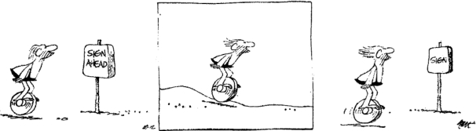

符号研究是关于符号的总体科学，现代语言学的创始人费迪南德·德·索绪尔于20世纪初期最早提出这一设想，但直到60年代，符号研究依然只是一个概念。到了20世纪60年代，一些人类学家、文学批评家和其他研究者为语言学取得的成功所倾倒，试图从语言学的方法论中吸取经验，开始发展索绪尔所设想的符号科学。 [11] 巴特是符号研究的早期倡导者之一。多年之后，他在选择法兰西学院的教职头衔时，以符号研究作为研究领域，虽然他在就职演说中强调，他个人的符号研究与当前不断壮大的这一学科（之前他曾积极推动它的发展）只有间接联系。
要想讨论巴特作为一名符号研究者的所作所为，不仅需要确认他对于这一领域的持续关注，而且要特别注意他对于新方法的态度。他看重这些方法，因为它们具有阐释力，并且能造成陌生化的效果，但是一旦出现正统化的苗头，他立即就开始反叛。最初吸引他转向符号研究的原因很清楚。在《神话学》中，他发现各种语言学术语使他能够从新的视角来观察文化现象，于是他满怀热情地接受了这一设想，把人类的全部行为看作是一系列“语言”。“对我来说，一种符号科学能够刺激社会批评，在这一理论设想中，萨特、布莱希特和索绪尔可以携手合作”（《就职演说》，第32/471页）。吸引他的部分原因在于，他希望一种需要人们对能指和所指加以命名的形式研究能够令人信服地展示各种行为所隐含的意识形态特征。但一种新的学科或者一套新的词汇的重要意义，首先在于迫使人们重新审视习以为常的现象，并且揭示人们潜在了解的内容：为了应用新的术语或者实施新的操作，人们必须重新思考熟悉的实践行为。
新的方法具有陌生化效果 ，随着这一学科变成正统的一部分，这种效果也将就此消失。只有把符号研究界定为对其他业已确立的学科提出质疑的一种观点，巴特才能继续将他本人视为一名符号研究者。在《就职演说》中，他开玩笑说，希望把“文学符号研究教授”变成一把轮椅，一直保持移动，成为“当代知识的通配符”（第38/474页）。他把自己的符号研究描述为对语言学的“消解”，或者更确切地说，对意指行为各个方面的研究，这些方面不属于纯粹的语言现象，因此被科学性的语言学搁在一旁。他的符号研究要“努力汇集语言中的杂质，语言学中的废弃物，任何讯息的即时变化：欲望、惧怕、表达、恐吓、进步、讨好、抗议、辩解、侵犯和旋律，积极的语言正是由这些内容所构成的”（第31——32/470——471页）。在他的职业生涯里，巴特一直保留着符号研究这个概念，用它来揭示意义的各种层面，而这些意义层面正是正统的学科研究所忽略的内容。随着符号学变成一个正式的学科领域，巴特的符号研究发生了转变，从倡导一种符号科学，变成在这种符号科学的边缘位置进行活动。
在《符号学原理》（1964）中，巴特试图确立一种规范做法，他提出了这门新兴学科的若干基本概念——区分了语言 和言 语 ，能指 和所指 ，横组合关系 和纵聚合关系 ——并且思考了如何将这些术语用于分析语言之外的现象。他认为，符号研究必须先“实验自身”。他扮演了公共实验者的角色，尝试了各种在他看来有助于研究其他意指现象的语言学概念。
在索绪尔所做的各种区分中，最重要的一对是语言 和言语 。前者指语言体系，也就是人们在学习语言时所掌握的内容；后者指人们说的话，即无数的实际表达，包括口语和书面语。语言学和（通过类比关系确立的）符号研究试图描述潜藏的规则体系和区分，这些要素使得意指成为可能。符号研究的前提是，既然人类行为和客体具有意义，那么就必然存在某种由区分和规约所组成的（有意识或无意识的）体系，能够产生意义。对于想要研究某种文化中的食物体系的符号研究者来说，言语由各种饮食事件所构成，而语言则是潜藏在这些事件背后的规则体系。这些规则规定，什么是可以吃的，哪些菜肴之间可以搭配，哪些菜肴之间形成鲜明对照，以及这些菜肴如何组合构成一顿饭菜。简而言之，这些规则和规定决定了哪些饭菜在文化意义上是合乎正统的，哪些不是。餐馆的菜单是一个社会的“食物语法”样本，其中包括了“句法”位置（汤、开胃菜，主菜、色拉、甜食）和不同项目所组成的纵聚合类别，用来填充每个位置（供人们选择的各种汤）。在一顿饭菜中，各道菜的句法次序有惯例可循（汤、主食、甜食，这是正统的次序；甜食、主食、汤，这样的次序则不合语法）。在各个类别（比如主食或甜食）中，不同的菜肴之间所形成的对比具有意义：汉堡和烧野鸡有着不同的次级意义。符号学家借用语言学范式来处理这样的素材，他的任务很明确：重构由各种区分和惯例所组成的体系，这些区分和惯例使得某些现象对于某个文化的成员来说，具备一定的意义。
图8 1978年1月7日，法兰西学院：巴特的就职演说。
巴特的论述有一个鲜明特点，那就是他声称语言不仅是符号体系的重要范例，而且也是符号研究者所依赖的现实：事实上，除了语言，不要研究其他事物。他甚至提出，索绪尔把语言学当作符号研究的一个分支，这是种错误的做法；符号研究才是全面语言学的一个分支：它研究的是语言如何表述世界。符号研究者调查某个特定文化的食物体系或者服饰体系，试图找出其中的意指单位和差别，他们所能找到的最佳线索就来自语言，来自人们用于谈论食物和服饰的语言，来自这一语言命名和没有命名的事物。巴特问道：“谁能确信，当我们从全麦面包转到白面包的时候，或者从无边女帽转到无边男帽的时候，我们从一个所指转到了另一个所指？在多数情况下，符号研究者有一些制度性的中介物，或者说元语言，能够为他提供变换所需的所指：关于美食的文章或者时尚杂志”（《符号学原理》，第139——140/66页）。
虽然语言是符号研究者拥有的唯一证据，但这并不会让符号研究成为语言学的一部分，就像历史学家对于书面文献的依赖不会让历史研究成为语言学的一部分一样。但符号研究者不能只依赖语言，他们不能假定被命名的一切都是重要的，没有被命名的一切就是不重要的，尤其是在研究习以为常的现象时。然而，对于巴特来说，语言证据在《流行体系》（他的大规模符号研究）中是不可或缺的方法。时装是一种体系，它通过区分各种服装来创造意义，使细节具有意指功能，并且在服饰的某些方面和世俗行为建立联系。巴特写道：“真正销售的是意义”（第10/xii页）。为了描述这一体系，巴特选取了两本时装杂志一年内配发的照片说明文字作为研究对象。他的设想是，这些文字把人们的注意力吸引到让服装显得时尚的某些方面，由此他可以辨认出在这个符号体系中起作用的区分。
巴特找出意指行为的三个层次，有两个例子可以很好地说明这种层次划分：“印花布在竞争中取胜”和“细长的花边让人印象深刻”。在巴特所说的“服装代码”（即界定时尚的代码）层面上，印花布 和花边 是能指，它们的所指是时尚 。在第二个层面上，把印花布和竞争放在一起意味着这些服饰适合在某种社会场合下穿着。最后，还有“一种新的符号类型，它的能指是说出口的时尚言论，而它的所指是这本杂志拥有或者想要传递的关于世界和关于时尚的形象”（第47/36页）。这些说明文字暗示，花边不仅被视为优雅的装饰，事实上它生产了优雅这一品质，而印花布则是取得社会成功的关键的、积极的要素（人生是一场竞争，你的服饰将决定你的胜败）。
服装代码很重要，但解读起来并不有趣。巴特辛勤工作，研究了大量时尚杂志的说明文字，分析了时尚所依赖的各种变化。在方法上，他遇到了一些困难：尤其是，要想清楚地对时装加以分析，就需要指出哪些结合是不可能的，或者说，是不时尚的。 [12] 对于巴特和他的读者来说，更吸引人的是修辞体系，即时尚的神秘层面。时尚遵循神话原则，它试图把它背后的惯例伪装成自然事实。今年夏天服装将采用丝质面料 ，说明文字这样告诉我们，仿佛在宣布一个不可避免的自然事件；现在的裙子正变得越 来越长 ，必然如此。说明文字告诉读者，这些服饰多么有用——正适合清凉的夏夜 ——但某些用法的特定性让人困惑。比如，为什么要说，适合在夜间沿着加来码头漫步时穿着的雨衣 ？巴特注意到：
第268/266页
时尚积极有效地把它的符号自然化，因为它必须充分利用这些细小差别，并提出细微变化的重要性。今年绒毛布料取代了 粗毛布料 。重要的不是内容，而是区别本身。时装“就是这样一种景观，人们从中发现自己有能力让微不足道的细节进行意指”（第287/288页）。或者，就像巴特在《文艺批评文集》中所说的：“时装和文学强烈地、精妙地进行意指，这一行为有极端艺术所具备的全部复杂性，但也可以说，它们意指的对象是‘虚无’，它们就存在于意指行为中，而不是存在于被意指的对象中”（第156/152页）。
巴特最系统化的符号研究所得出的结论却是要拒绝“关于符号的科学研究”这一设想，他后来的作品反复强调这一结论。“我经历过对于科学性的美好梦想”，他后来对自己在20世纪60年代早期的思想持否定态度（《回应》，第97页）。他把符号研究界定为关注一切使意指行为的科学变得不可能的研究，这样他就把自己拒绝符号科学的态度与意指行为优先于被意指对象的观点联系在了一起，并且刻意忽略了下列事实：他现在所否定的系统性视角产生并支持这种关于意义的一贯看法。只有通过揭示时装或文学其实是一种体系，一种不停制造意义的机制，巴特才能继续维持意指行为相对于被意指对象的优先地位。在体系的视角之外单独而论，关于时装的陈述具有意义，并且其意义远比其他意指过程更加重要。只有通过令人信服地辨认出符号机制的系统化运作，人们才能证明时装说明文字的具体内容与此无关，从而让巴特提出的设想更具说服力，即时尚或文学作为符号体系，暗中破坏或清空了它们大量制造的意义。

图9 符号研究的历史。
虽然巴特后来希望把他的符号研究看作是对于科学性分析起到抗拒作用的各方面意义的关注，但他在后期作品中关于意义的看法很有趣，因为他对于意指行为的更多层面提出了总体看法。比如，他注意到，他和面包店里的女人所说的关于光线美感的话体现出一种阶级品味，这当然不是科学，但这很有趣，而且颇有见地，因为这个例子告诉我们，对于起到区分阶级作用的符号进行调查需要涵盖多大的范围。又如，巴特认为学术讨论的惯例要求人们注意对方提出的问题的表面内容，而不是它所表达的潜在态度。当他持这一观点时，他就为调查指明了一个主题：言语行为的特定内容与基本力量之间的关系，以及不同的惯例如何导致不同的回应。牢牢地坐在他的“轮椅”里，巴特不再需要一门符号科学，不再需要用后者的力量来扩展和运用他本人的洞察力。他可以畅谈自己的愿望，他要生产一种没有权力的话语，这种话语不会把它自身强加于人，而是成为一种令人愉快的对于新鲜事物的体验（《就职演说》，第42/476页）。然而，他的话语依然将兴趣放在它所激发的对于符号和意义的潜在的系统性思考上。因为有意义的地方就有体系。正是巴特本人告诉了我们这一点。